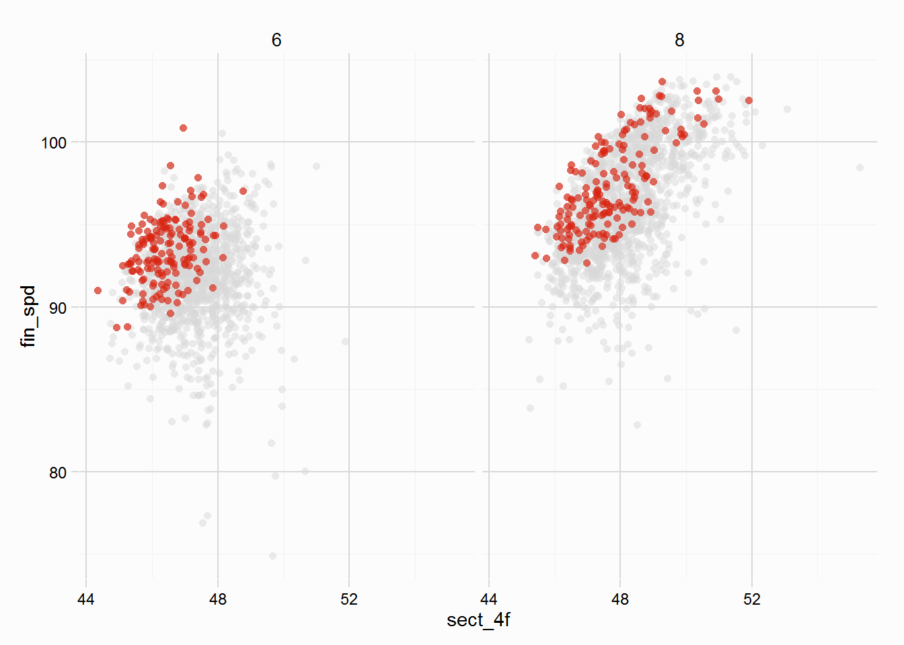

Simple, but often necessary, cleaning has been covered in the Data Cleaning vignette, this vignette will look to more tools to help prepare a dataset for handicapping, as well as some preliminary analysis.
The dataset used is included in the package, called gulfstream, and contains a good number of races run over the 6 and 8 furlong dirt course at Gulfstream Park in the US. To load the dataset, and inspect its structure (see ?gulfstream for details about the variables):
data(gulfstream)
str(gulfstream)## 'data.frame': 2863 obs. of 17 variables:
## $ date : chr "01/01/13" "01/01/13" "01/01/13" "01/01/13" ...
## $ race : int 1 1 1 1 1 1 1 1 2 2 ...
## $ race_type: chr "mdn clm" "mdn clm" "mdn clm" "mdn clm" ...
## $ dist : int 6 6 6 6 6 6 6 6 6 6 ...
## $ surf : chr "dirt" "dirt" "dirt" "dirt" ...
## $ value : int 17500 17500 17500 17500 17500 17500 17500 17500 17500 17500 ...
## $ going : chr "fast" "fast" "fast" "fast" ...
## $ trainer : chr "nicholas gonzalez" "anthony pecoraro" "edwin t broome" "edward plesa jr" ...
## $ jockey : chr "jermaine bridgmohan" "joseph rocco jr" "gabriel saez" "elvis trujillo" ...
## $ j_clm : int 0 0 0 0 5 0 7 0 0 0 ...
## $ age : int 3 3 3 3 3 3 3 3 3 3 ...
## $ wgt : int 122 122 122 122 117 122 115 122 122 122 ...
## $ gate : int 6 1 8 7 5 2 4 3 2 4 ...
## $ pos : int 1 2 3 4 5 6 7 8 1 2 ...
## $ horse : chr "don'tgetmestarted" "dream of scipio" "beltram" "gold bitten tiger" ...
## $ fintime : num 72.4 74.2 74.5 74.7 74.7 ...
## $ sect_4f : num 47 47.1 47.4 48.4 47.4 ...The dataset is already quite clean, but there are a few functions available in the RcappeR package to work with the data. First a look at the necessary steps ahead of handicapping using either zipf_init or zipf_hcp.
In order to use some of the more complex functions (zipf_init, zipf_hcp) a certain amount of preparation is required. There are a number of variables needed for handicapping, these are:
The variables above should be pretty common in a racing dataset that you wish to calculate ratings from. In the gulfstream dataset we have all the above. Individual final times for horses might be a hurdle, but lengths beaten is a much more common variable, and as covered in the Data Cleaning vignette, the conv_margins can convert lengths beaten into final times.
A unique race id is required in the gulfstream dataset, but this can be created by concatenating the date and race variables. Obviously if a dataset contains races at more than one racecourse, it would be wise to include something about that: you can’t have two races being run at the same track, on the same day at the same time. Let’s create a variable called date_race:
gulfstream$date_race <- paste(gulfstream$date, gulfstream$race, sep = "_")The above date_race variable was the only one missing from the above list, but before handicapping can begin we need to calculate margins between horses that take into account the following:
The best (imo) way to do this is to use the package dplyr which takes advantage of the %>% pipe function from magrittr to calculate the necessary variables. The code below processes the gulfstream dataset, creating the necessary variables. It is explained in more detail below the code, the functions used from RcappeR are btn_sec, lbs_per_sec and diff_at_wgts:
library(dplyr)
gulfstream <- gulfstream %>%
group_by(date_race) %>%
mutate(btn_sec = btn_sec(fintime),
scale = lbs_per_sec(dist = dist, surf = "dirt"),
btn_lbs = scale * btn_sec,
diff_wgts = diff_at_wgts(btn_lbs = btn_lbs, wgt_carried = wgt))library(dplyr)gulfstream <- gulfstream %>%group_by(date_race)btn_sec = btn_sec(fintime),scale = lbs_per_sec(dist = dist, surf = "dirt"),btn_lbs = scale * btn_sec,diff_at_wtgs(btn_lbs = btn_lbs, wgt_carried = wgt))At this stage handicapping can begin by using the zipf_init function, see Initialising a Handicap vignette. Ahead of using zipf_race and zipf_hcp users will perform the same steps as above, but with a dataset containing a single race (so no need for group_by) that needs to be handicapped, the code shows the theoretical steps for one race.
one_race <- one_race %>%
mutate(btn_sec = btn_sec(fintime),
scale = lbs_per_sec(dist = dist, surf = "dirt"),
btn_lbs = scale * btn_sec,
diff_wgts = diff_at_wgts(btn_lbs = btn_lbs, wgt_carried = wgt))Unlike the dataset used in the Data Cleaning vignette we have individual times for all runners, but no margins in seconds. The btn_sec function can calculate margins between horses, necessary when handicapping races. If a dataset only has one race then it can be used as such:
btn_sec(times = fintimes)However, as the gulfstream dataset contains many different races, the date_race is needed to identify the unique races, otherwise btn_sec would calculate the margins between the fastest time in the dataset and each of the 2863 rows. Margins between the leader after 4 furlongs can also be calculated.
gulfstream <- gulfstream %>%
group_by(date_race) %>%
mutate(btn_sec = btn_sec(times = fintime), ## behind winner at the finish
bhd_ldr_sect = btn_sec(times = sect_4f)) ## behind leader at the 4 furlong sectionalFinishing Speed is an innovation by Simon Rowlands of Timeform, find more details in posts by Simon, Part 1 and Part 2. In short it compares the finishing speed of a horse to its average race speed; a finishing speed of 100 means the horse showed the same speed over the finishing sectional as it did the entire race; lower than 100 and the horse finished slower; higher, faster.
In the dataset there are individual times for all horses after 4 furlongs in their race, variable sect_4f, and their final time, fintime. The fin_spd function needs the time for the closing sectional, as well as the closing sectional distance - which is the race distance minus 4 (furlongs).
# calculate the closing sectional time
gulfstream$sect_time <- gulfstream$fintime - gulfstream$sect_4f
# using the new sect_time variable and other data in the dataset
gulfstream$fin_spd <- fin_spd(fin_time = gulfstream$fintime,
dist = gulfstream$dist,
sect_time = gulfstream$sect_time,
sect_dist = gulfstream$dist - 4)The following plot shows our newly created finishing speed variable plotted on the y axis against the times horses recorded over the opening 4f. Horses over the 8f dirt course finish their closing sectional (4 furlongs) faster than horses running the 6f dirt course do their closing sectional (2 furlongs).

Using the dplyr package it is easy to calculate par Finishing Speeds for each finishing position, from which further analysis can be carried out (though it won’t be here). Winners, unsurprisingly, have higher finishing speeds than those in behind. Focusing on just 6 furlong races
gulfstream %>%
filter(dist == 6) %>%
group_by(pos) %>%
summarise(par_fs = mean(fin_spd, na.rm = TRUE),
sd_fs = sd(fin_spd, na.rm = TRUE))## Source: local data frame [12 x 3]
##
## pos par_fs sd_fs
## 1 1 93.39885 1.958643
## 2 2 93.01724 1.856771
## 3 3 92.87006 2.105937
## 4 4 92.64583 2.288841
## 5 5 92.09872 2.515336
## 6 6 91.59947 2.435111
## 7 7 90.94614 2.921147
## 8 8 90.32937 3.871889
## 9 9 90.48742 3.579857
## 10 10 90.90111 2.830579
## 11 11 89.64792 2.830938
## 12 12 88.15417 2.863220Draw analysis is often a quick and dirty way of eliminating runners, but analysis often just looks at raw counts, winners vs loses. The rnrs_btn function calculates the percentage of runners beaten, which obviously benefits from looking at ALL runners in a race, rather than just the winners. Once again we need the date_race variable and the dplyr package to isolate individual races.
gulfstream %>%
group_by(date_race) %>%
mutate(pct_btn = rnrs_btn(pos = pos)) %>%
ungroup() %>%
group_by(gate) %>%
summarise(pct_btn = mean(pct_btn, na.rm = TRUE))## Source: local data frame [14 x 2]
##
## gate pct_btn
## 1 1 0.5421846
## 2 2 0.5277538
## 3 3 0.5145231
## 4 4 0.5281538
## 5 5 0.4698769
## 6 6 0.4742947
## 7 7 0.5166780
## 8 8 0.4701747
## 9 9 0.4806135
## 10 10 0.4694495
## 11 11 0.4150704
## 12 12 0.4226667
## 13 13 0.4600000
## 14 14 0.6166667